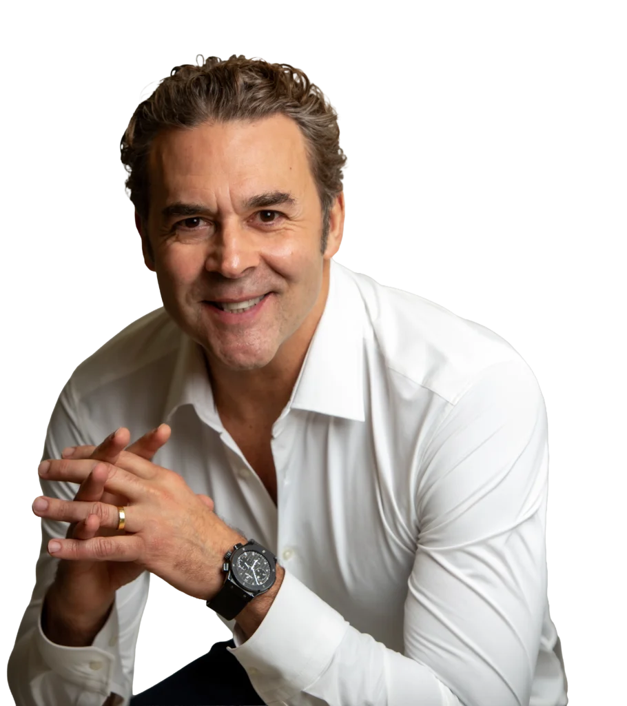
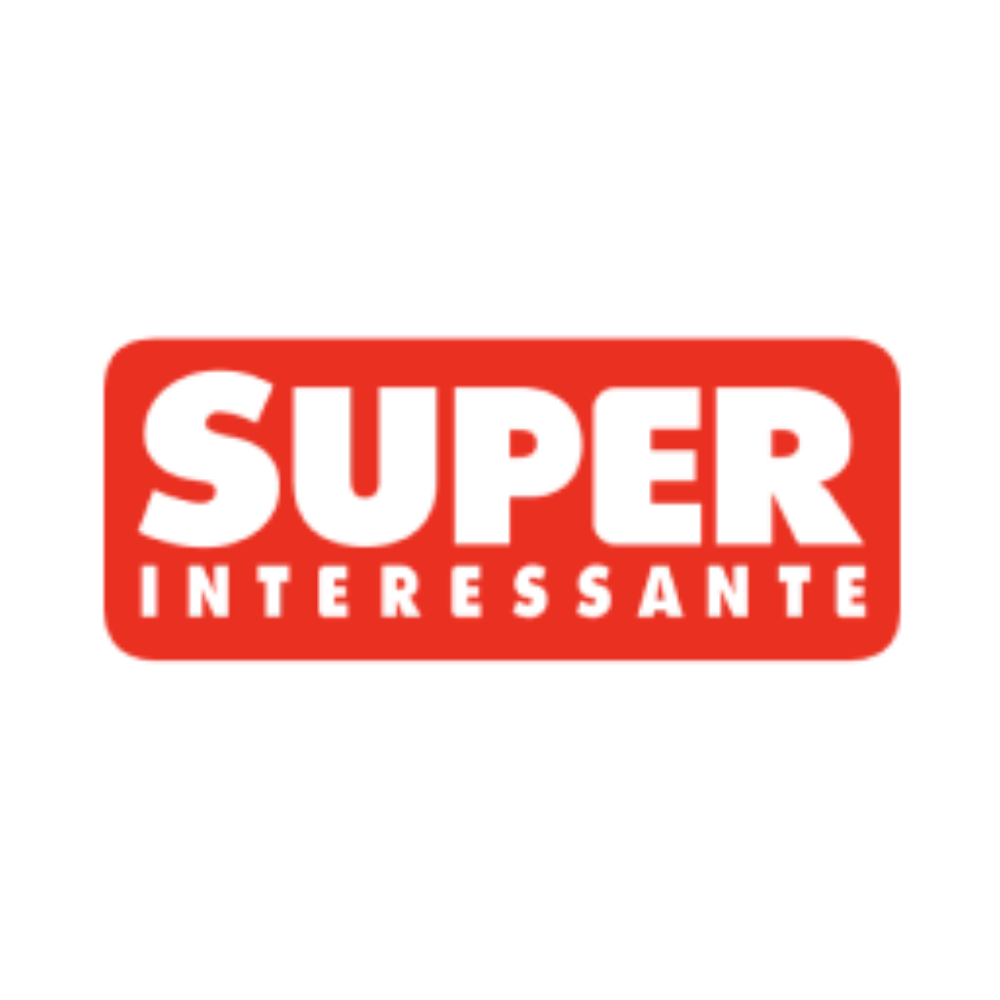

Dr. Guido explica os testes farmacogenéticos no Manhattan Connection.
Médico Psiquiatra, CEO e Fundador da GnTech
Sou Dr. Guido Boabaid, médico psiquiatra e psicoterapeuta, com mais de 32 anos de experiência. Atendo presencialmente em Florianópolis e São Paulo e realizo teleconsultas para pacientes de todo o Brasil e do exterior e também sou membro do Corpo Clínico do Hospital Israelita Albert Einstein.
Minha prática médica e a dos médicos da minha equipe é baseada em Psiquiatria de Precisão, com tratamentos elaborados de forma personalizada, a partir das características clínicas, genéticas e da história de cada pessoa. Sou fundador e CEO da GnTech, empresa de biotecnologia pioneira e líder no Brasil e na América Latina.

Atendimento através do seu celular ou computador!
A teleconsulta permite buscar acompanhamento para a saúde mental e geral de forma prática, segura e acessível, sem necessidade de deslocamento.
O atendimento é realizado pelo Dr. Guido ou pelos psiquiatras da sua equipe, com orientação clínica personalizada e baseada nas necessidades específicas de cada paciente.
Com a telemedicina, é plenamente possível iniciar e manter um tratamento personalizado com o mesmo rigor técnico e eficiência de um atendimento presencial do conforto do seu lar, do seu ambiente de trabalho ou de onde você estiver.
Atendimento especializado em diversas áreas da psiquiatria com abordagem de precisão
Depressão, transtorno bipolar e seus subtipos. Transtornos de ansiedade, TDAH.
Abordagem especializada que leva em consideração a genética, o estilo de vida e o ambiente de cada um para elaborar um ambiente personalizado.
Avaliação detalhada e precisa para diagnóstico diferencial e planejamento terapêutico personalizado.
A Farmacogenética ocupa um papel central nesse processo, pois permite orientar escolhas terapêuticas mais seguras, precisas e eficientes para cada paciente. Precursor na utilização do teste farmacogenético no Brasil, o Dr. Guido integra essa tecnologia à sua prática clínica diária, aliando evidências científicas, escuta atenta, acessibilidade e acompanhamento contínuo. É também fundador e CEO da GnTech, empresa pioneira e líder em farmacogenética no Brasil e na América Latina.
Por que um medicamento pode não funcionar?
Cada DNA é único e afeta como o corpo metaboliza medicamentos. O que funciona para uma pessoa pode não funcionar para outra.
A farmacogenética estuda essa relação entre genes e resposta a medicamentos, permitindo tratamentos mais precisos e eficazes.
O teste GnTech gera um laudo personalizado que identifica quais medicamentos têm maior chance de sucesso para você.
Faça seu Teste Farmacogenético →

Existe algo mais poderoso e inspirador do que reencontrar a sua própria essência?
Conheça a história de Ana Maria, uma linda jovem de Florianópolis que inicia uma jornada para reencontrar a si mesma — uma trajetória impulsionada pelo tratamento contra a depressão que realizou no auge da sua juventude.
Esta é uma história realista e mágica ao mesmo tempo, em que a felicidade é construída gradativamente, "de dentro para fora", de forma legítima e sustentável, que nos ajuda a refletir sobre quem somos, onde estamos e para onde queremos ir.
"A verdadeira felicidade é construída de dentro pra fora."
— Dr. Guido Boabaid MayConheça mais sobre o livro nos links abaixo:

O Dr. Guido leva para empresas, universidades e eventos o mais recente conhecimento em saúde mental, neurociência e medicina personalizada, com uma abordagem que transforma vidas.
O que nossos pacientes dizem sobre o tratamento
"Cheguei no consultório do Dr. Guido com uma crise de ansiedade. Logo senti confiança e conhecimento. O remédio e a psicoterapia – que também faço com ele – mudaram tudo. Estou em pleno tratamento, venci fobias e mudei minha qualidade de vida. Devo meu bem estar a ele. Sempre e sempre: obrigada por tanto, Doutor!"
"Tratar a ansiedade/depressão com o Dr. Guido é sinônimo de segurança, respeito e conhecimento. Não apenas prescreve remédios, mas sim analisa todo o conjunto físico, ambiental e social em torno do paciente para prescrição do melhor tratamento de forma personalizada. O teste farmacogenético possibilita uma margem de erro ainda menor para que o paciente não sofra com testes e trocas de medicamentos constantes."
"Dr Guido é um profissional excepcional que atende seu paciente de coração, ama o que faz e faz com maestria. Trata não somente os sintomas, mas a pessoa. É médico da minha mãe e ele estabeleceu um laço de contato e estabeleceu um plano de tratamento para juntos alcançarmos a cura. Sensacional. Indico a todos. Obrigada!"
Matérias e reportagens sobre farmacogenética, saúde mental e medicina personalizada.
Reportagem sobre o avanço da GnTech no uso da farmacogenética para orientar tratamentos com mais precisão, incluindo aplicações para pacientes oncológicos.
Ler matériaA matéria explica como a análise genética pode indicar quais medicamentos tendem a funcionar melhor para cada pessoa, reduzindo tentativas e efeitos indesejados.
Ler matériaConteúdo sobre como exames genéticos podem apoiar médicos na escolha de antidepressivos, considerando diferenças individuais na metabolização dos remédios.
Ler matériaReportagem sobre a empresa catarinense que desenvolveu um teste genético voltado a tratamentos em saúde mental, aproximando tecnologia e cuidado clínico.
Ler matéria
A publicação aborda como o DNA pode ajudar a personalizar tratamentos para depressão, tornando a escolha terapêutica mais informada e individualizada.
Ler matériaMatéria sobre o funcionamento dos testes genéticos na escolha de medicamentos para ansiedade e depressão, com foco em segurança e personalização do cuidado.
Ler matériaDê o primeiro passo para cuidar da sua saúde mental com acompanhamento especializado e baseado em ciência.
Tire suas principais dúvidas sobre consultas, atendimento e tratamento.
O agendamento pode ser feito diretamente pelo site, pelo WhatsApp ou por telefone. Clique em "Agende sua consulta" em qualquer página e escolha o horário que melhor se encaixa na sua rotina.
Sim. As consultas presenciais acontecem em Florianópolis (SC). O Dr. Guido também realiza atendimento online (telemedicina) para pacientes em todo o Brasil, com o mesmo cuidado e personalização da consulta presencial.
O consultório opera com atendimento particular. Emitimos nota fiscal/recibo para reembolso junto ao seu plano de saúde — consulte as condições diretamente com a secretaria.
O Dr. Guido é especialista em psiquiatria e medicina personalizada. Trata condições como ansiedade, depressão, TDAH, transtorno bipolar, burnout, distúrbios do sono e transtornos alimentares, sempre com abordagem individualizada e baseada em evidências.
O psiquiatra é médico especializado em saúde mental — pode avaliar, diagnosticar e prescrever medicamentos quando necessário. O psicólogo realiza psicoterapia. Em muitos casos, as duas abordagens se complementam. Se você tem dúvidas, uma consulta inicial com o Dr. Guido pode ajudar a orientar o melhor caminho para o seu caso.
Não necessariamente. O Dr. Guido adota uma abordagem personalizada: nem todo quadro requer medicação, e quando ela é indicada, a escolha leva em conta o perfil genético do paciente, o histórico clínico e a resposta esperada ao tratamento.
A farmacogenética analisa os genes do paciente para entender como seu organismo metaboliza determinados medicamentos. Com o teste GnTech, é possível saber com antecedência quais remédios tendem a funcionar melhor para você — eliminando o processo de tentativa e erro no ajuste de medicações.
Não. O teste é um diferencial do tratamento — especialmente útil para quem já tentou diferentes medicações sem sucesso ou busca precisão desde o início. Mas não é obrigatório para iniciar o acompanhamento.
Sim. O Dr. Guido é palestrante ativo em eventos corporativos com temas como saúde mental no trabalho, prevenção do burnout e bem-estar organizacional. Para solicitar uma proposta, acesse a página de Palestras & Eventos.